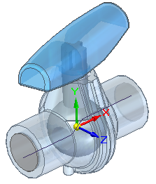
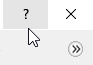

Overview of Simcenter FLOEFD for Solid Edge
Flow simulation in Solid Edge
Simcenter FLOEFD for Solid Edge is the fully integrated computational fluid dynamics (CFD) software for calculating gas or liquid fluid flows inside and outside Solid Edge assembly models, as well as heat transfer to, from, between, and within these models due to convection, radiation, and conduction.
Flow analysis is used in many industries and for various applications, where design optimization and performance analysis are extremely important, such as valves and regulators, hydraulic and pneumatic components, heat exchangers, automotive parts, electronics and many others.
The Solid Edge 2021 version is compatible with and requires the installation of “FloEFD for Solid Edge” version 2020.1 or higher. Please install the correct “FloEFD for Solid Edge” version to use this functionality.
If you have an academic license and you want to apply external loads on a FLD file from an older version of FLOEFD, then you need to recreate the *.fld file in the new version.
Getting started
If you have a license for Simcenter FLOEFD for Solid Edge and a valid WebKey account, you can download the product installation files from Support Center: https://support.sw.siemens.com/.
After installation:
-
A folder—Simcenter FLOEFD for Solid Edge—is added to the Start menu. It contains additional utilities and user documentation.
-
A command ribbon—Flow Analysis—is added to Solid Edge.
-
A tab—FloEFD Analysis—is added to PathFinder.
Learn to use flow analysis
A full set of user assistance is available to learn Simcenter FLOEFD:
-
Go to Start menu→Simcenter FLOEFD for Solid Edge to find the user guide (in CHM format) and tutorials (in PDF format).
-
Tutorial models are available in the installation folder, in <install_dir>\Examples\Tutorial Examples\.

-
On the Solid Edge ribbon, you can open the online help by clicking the Flow Analysis tab→Help group→Topics button , or you can click the Support button to get technical support from the Siemens Support Center website.
-
After you select a command on the Flow Analysis ribbon, you can get context help for the wizard or dialog displayed by the command:
-
In a wizard, click the Help button.
-
In a dialog, click the ? button, and then click an area in the dialog box.

Note:F1 help for commands on the Flow Analysis ribbon is not available in Solid Edge 2023.
-
To learn how to use fluid flow analysis results with Solid Edge Simulation finite element analysis, see Use fluid flow results in a linear static or thermal study.